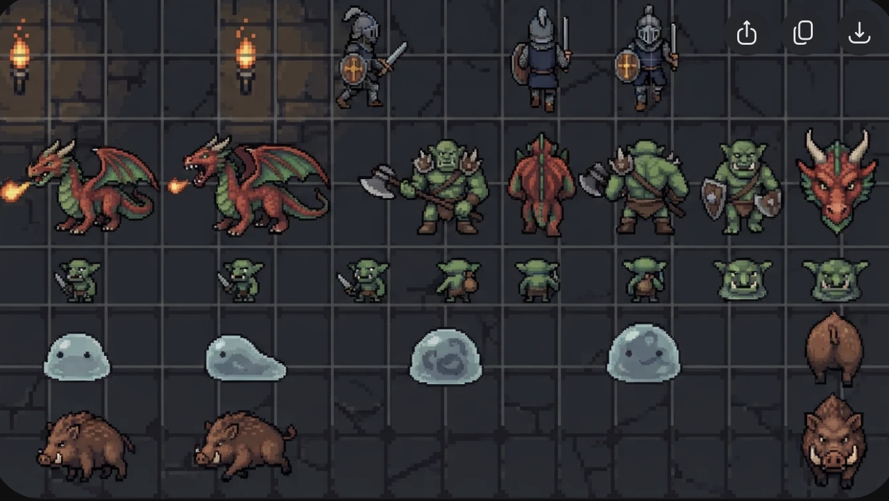
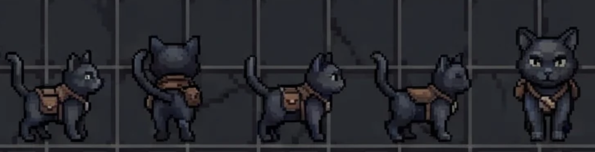
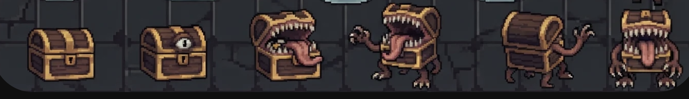

DUNGEON CRAWLER · CHARACTER COLLECTION · PREVIEW ONLY
Monsters, bosses and townsfolk
The approved silver knight establishes the style. New characters follow the supplied dragon/orc/goblin/blob/boar, charcoal Marmalade and Mimic references. No game files, stats, maps or animation clocks have changed.
Dungeon comparison and approved knight · Coverage, prompts and export notes · Manifest
CHARACTER REVIEW COMPLETE — user reviewed the characters; runtime integration remains separate. Cards use actual proposed screen scale with the same knight beside them. Ground/grid/shadows are review decorations, not PNG backgrounds.
Loading character sheets…
Checking…
User-supplied design references


